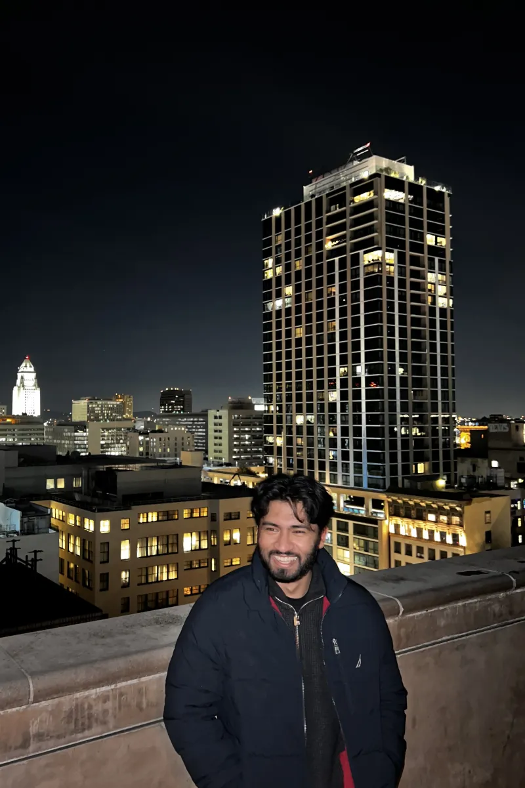

About Me
Community and Public Centered Work
As mentioned, I’m currently a Data Analyst with the City of Los Angeles. My career began as an intern working for former Mayor Eric Garcetti’s office, where I helped the Central Area Representative receive and respond to community concerns. Later, I joined former City Controller Ron Galperin’s office primarily to analyze how the City’s fines and fees are impacting Angelenos, and make that information available to the public. After briefly continuing this work under City Controller Kenneth Mejia, I supported the Civil + Human Rights and Equity Department’s efforts to mitigate various Citywide inequities and historical injustices. Today, I transform data into actionable insights that guide strategy, improve policy, program and service delivery, and drive measurable impact in addressing homelessness and housing needs in Los Angeles. While I’m focused on improving the intersection between technology and public affairs, I’ve ensured that the underlying theme in my work goes back to improving the quality of life for people in Los Angeles one way or another.

A large part of my work originates while studying at UCLA’s Luskin School of Public Affairs. While I knew that I wanted to do public-centered work in my undergrad, it was here that I was able to dive into the intersection between data science and social science research. I saw the power behind different data tools to uncover trends, correlations, and patterns among social issues. There was power in pairing this data analysis with communities’ visions or other research to promote effective policies and programs. It slowly shaped my goal to use these technical and research skills to develop effective policies and innovate public service delivery. To this day, I use what I’ve learned at UCLA to see how we can adapt new emerging technologies to address the social issues that exist today.
Growing up as a Bengali in Koreatown’s Little Bangladesh has played a significant role towards the work that I do. I’ve witnessed the effects of issues like unaffordable housing, lack of quality green spaces, and wealth inequality first hand by living here, and it’s why I’m determined to address these issues at a larger scale. That’s not to say Koreatown or Los Angeles is riddled with all these problems. Growing up here has also shown me the beauty of LA. Even with the issues that exist, the culture, people, and diversity that come with this city is worth maintaining and preserving, and serves as a significant reminder throughout my career. (Fun fact: I personally struggle to hold myself back from trying all the different restaurants in LA to avoid financial destitution.)
Every Restaurant I've Ever Eaten At 🥘
Loading restaurants…
In my free time, I enjoy making content such as vlogs, food and movie reviews (and sometimes some analyses of social issues). There’s something about keeping a record of the things I did and enjoyed - it feels like etching something into history. I also like to work out through strength training, basketball, hiking and running (3x LA Marathon finisher!). My biggest aspiration is to travel around the world and experience all types of new food, environments, and learn about different cultures.
Places I've Visited Around The World (And Want to Go To) 🌎
Loading places…